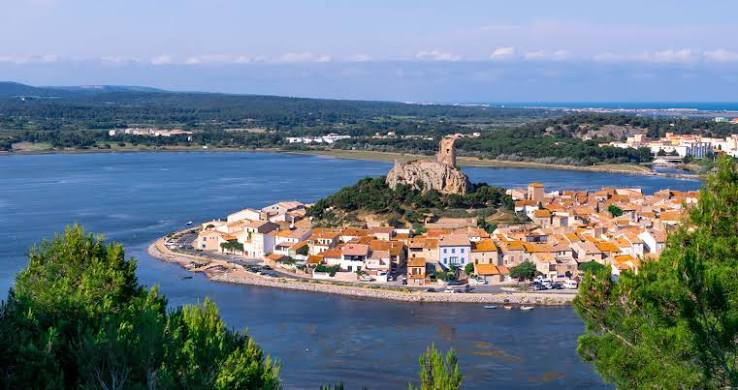

Gruissan et
son étang


⟹ Nature & Patrimoine ⟸
Un territoire occupé depuis la Préhistoire. L'histoire de Gruissan ne commence pas avec le village médiéval. La grotte de la Crouzade, dans le massif de la Clape, a livré des traces d'occupations préhistoriques, tandis que plusieurs sites de l'île Saint-Martin attestent une présence humaine ancienne. Le territoire se trouvait alors dans un paysage très différent : la Clape formait une île et la mer pénétrait profondément dans le golfe de Narbonne.
Gruissan au cœur du système portuaire romain. À l'époque de Narbo Martius, Gruissan occupait une position stratégique à l'entrée du vaste complexe portuaire narbonnais. Sur l'île Saint-Martin, les fouilles ont dégagé sur plusieurs milliers de mètres carrés un important établissement littoral gallo-romain. Avec La Nautique, Mandirac, le Castelou, Tintaine et d'autres installations, il participait au contrôle, au stockage et au transbordement des marchandises qui circulaient entre la Méditerranée et Narbonne. Fer, vin, céramiques, denrées alimentaires et produits importés de tout le bassin méditerranéen transitaient par cet ensemble.

Du port antique au château médiéval. Avec l'ensablement progressif du golfe et les déplacements des bras de l'Aude, les conditions de navigation changent. Le rocher du château, alors isolé au milieu des eaux et des zones humides, devient un point de surveillance essentiel. Un château est attesté en 1084. Fortifié au cours du Moyen Âge, il protège les accès maritimes et sert de refuge dans une période marquée par l'insécurité des campagnes et les incursions venues de la mer.
La Tour Barberousse. La tour qui domine aujourd'hui Gruissan est le vestige le plus spectaculaire de cette forteresse. La « nouvelle tour du château » est construite en 1247 par Guillaume de Broa. Le château est démantelé après 1632, mais la tour subsiste. Son nom de « Barberousse » est populaire et tardif : son origine exacte reste incertaine et il ne faut pas l'attribuer avec certitude au célèbre amiral ottoman Khayr ad-Din Barberousse. La ruine est devenue l'emblème de Gruissan.
Un village concentrique autour de son rocher. À mesure que les terres émergent autour de l'ancien îlot, l'habitat s'étend au pied du château. Les rues s'enroulent autour du rocher selon une forme circulaire très caractéristique. Gruissan devient un village de pêcheurs, de marins, de vignerons et de sauniers, étroitement dépendant des étangs et de la mer. La pêche lagunaire, la vigne de la Clape et les salins façonnent durablement son identité.
Les Chalets et l'invention des vacances à Gruissan. Dès les années 1850, la plage commence à être fréquentée dans le cadre d'un tourisme familial et spontané. Des constructions légères apparaissent sur le sable, donnant naissance au quartier des Chalets. Le site connaît plusieurs transformations et destructions, notamment pendant la Seconde Guerre mondiale, puis est reconstruit selon une trame régulière. Les chalets sur pilotis deviennent au XXe siècle une image emblématique de Gruissan ; leur célébrité nationale est encore renforcée en 1986 par le film 37°2 le matin de Jean-Jacques Beineix.
La révolution de la Mission Racine. À partir de 1963, Gruissan est intégré au grand programme d'aménagement touristique du littoral du Languedoc-Roussillon. Entre le vieux village et les Chalets s'étend alors un vaste espace marécageux. La Mission acquiert environ 1 500 hectares et confie la conception de la station à l'architecte Raymond Gleize. Il faut creuser les bassins et les chenaux, créer les routes, l'assainissement et les quartiers d'habitation tout en préservant les vues vers le village et la Clape.
La naissance du port moderne. Le projet est élaboré à la fin des années 1960 ; la première pierre de la résidence des Hublots du Port est posée en décembre 1973 et les constructions se multiplient à partir de 1974. Les premiers visiteurs de la nouvelle station arrivent en 1976. Les résidences aux formes arrondies et voûtées — notamment les célèbres « Dromadaires » — traduisent la volonté de créer une architecture méditerranéenne originale, différente des barres urbaines classiques. Cet ensemble est aujourd'hui reconnu comme un patrimoine architectural du XXe siècle.
Les étangs, mémoire vivante du territoire. Malgré le développement touristique, Gruissan reste indissociable de ses lagunes : étang de Gruissan, étang de Mateille, étang de l'Ayrolle et salins composent un paysage où se rencontrent pêche professionnelle, conchyliculture, saliculture, activités nautiques et protection de la biodiversité. Les graus assurent les échanges avec la mer et conditionnent la vie biologique de ces milieux peu profonds.
Une identité faite de plusieurs époques superposées. Gruissan réunit ainsi sur quelques kilomètres la Préhistoire de la Clape, le grand port antique de Narbonne, le château médiéval, le village de pêcheurs, les salins, les Chalets du XIXe siècle et la station planifiée des années 1970. Cette superposition exceptionnelle explique l'originalité d'un paysage où patrimoine bâti, mémoire maritime et espaces naturels restent étroitement mêlés.
Massif de la Clape : juste au nord du village, randonnées et domaines viticoles AOC La Clape.
Narbonne-Plage : plage voisine, reliée par la piste cyclable « la Littorale ».
Étangs de Bages-Sigean : la grande lagune narbonnaise, à quelques kilomètres au sud.
Narbonne : cathédrale Saint-Just et Palais des Archevêques, à 15 km.